갯벌 1평 지키기
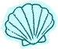
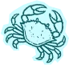
넓은 갯벌을 모두 지킬 수는 없지만,
1평은 내 이름으로 지킬 수 있습니다.
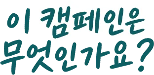
내 이름으로 지키는 갯벌 1평은,
난개발 위기에 놓인 사유지 갯벌 1평을
내 이름으로 매입하고 등기해
개발이 아닌 보호로 남기는 참여 캠페인입니다.
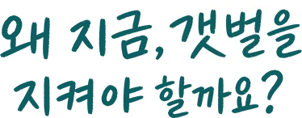
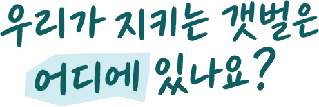
우리가 보호를 시작하는 곳은
전라북도 부안 갯벌입니다.
부안 갯벌의 80% 이상이 사유지입니다.
보호하지 않으면 언제든 개발될 수 있는 생태자산입니다.
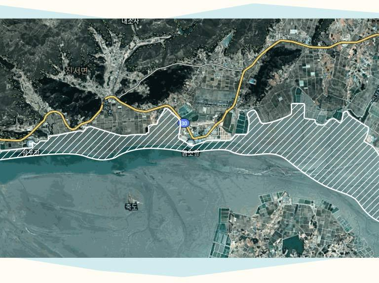
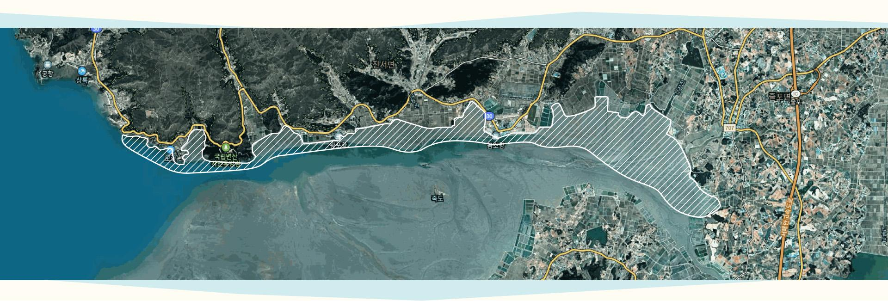
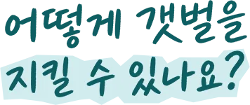
내 이름으로 지키는 갯벌 1평에 참여하시면
난개발 위험에 놓인 사유지 갯벌 1평을
법적으로 보호하는 주인이 됩니다.
필요서류 안내
매수인이 미성년자인가요?
닫기양부모 가정
가족이 같은 주소일 경우
가족이 다른 주소일 경우
한부모 가정
미성년자, 친권자 같은 주소일 경우
미성년자, 친권자 다른 주소일 경우
제출서류 유의사항 안내
캠페인 참여(10만원) 결제,
필수서류 등기발송
등기진행
필수 서류 제출 후
1~2개월 소요 예정
참여 완료
등기 서류 수신 및
필수 서류 제출 후
최대 3개월 소요 예정
복잡한 서류 없이도,
전문기관에 맡겨
갯벌 보호에
참여할 수 있습니다.
갯벌보호 캠페인에 참여해주시면
자연환경국민신탁을 통해
공익 보전지로
관리됩니다.
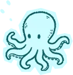
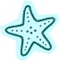
전문기관에 맡겨 보전하기
오늘, 내 이름으로 지키는 1평이
미래 세대의 내일을 만듭니다.
모든 갯벌을 지킬 수는 없지만,
1평은 내 이름으로 남길 수 있습니다.
그 1평이 우리 아이들의 자연이 됩니다.
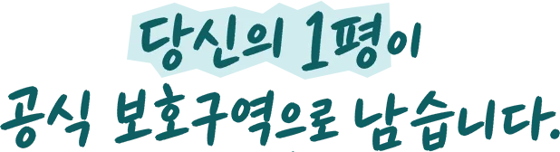
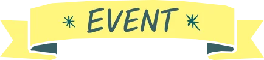
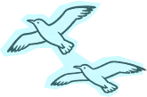
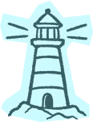
내 이름으로 지킨 그 갯벌을
직접 만나보는 시간!
참여자 중 100분을 추첨해
부안 1박 갯벌 투어 티켓을 드립니다!
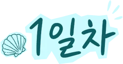
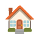
변산생태탐방원 숙박(변동가능성 있음)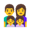
지역 프로그램 참여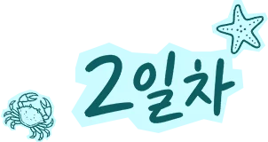
1박 2일간의 숙박, 식사, 체험프로그램,
익산역 ↔ 갯벌 셔틀 모두 무료제공입니다.
지키는 것에서 한걸음 더,
직접 만나러 가는 특별한 경험.
당신의 1평이 선물하는 하루를 경험해보세요!
* 갯벌 투어는 9월 중 진행 예정이며,
이벤트 당첨자 발표는 8월에 개별 연락드릴 예정입니다!
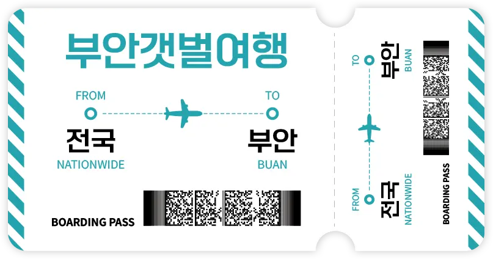
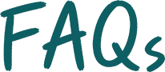
해당 이미지 중 일부는 ChatGPT의
AI 기능을 활용하여 생성되었습니다.